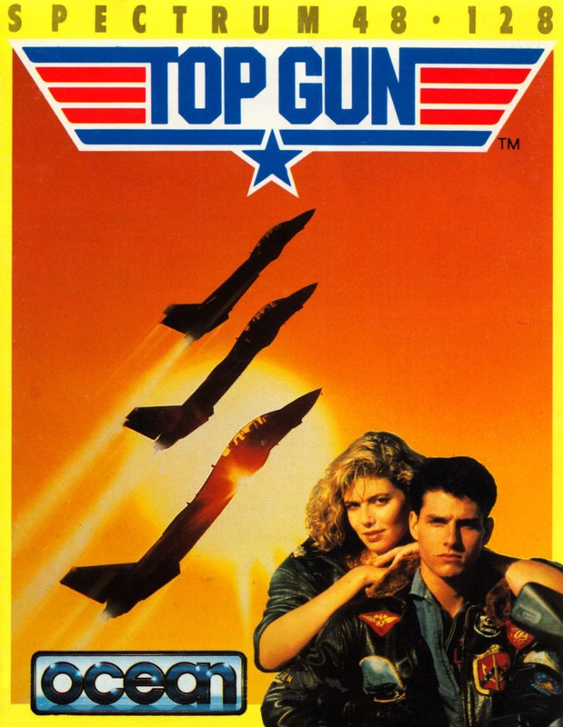
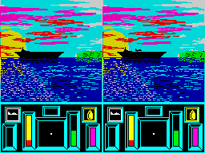

Top Gun


{kind=link}

| Publisher: | Ocean |
| Price: | £7.95 |
| Year: | 1986 |
| Source: | CRASH, Issue 37 |

Now’s your chance to emulate the exploits of hunky superstar Tom Cruise and the rest of the pilots at America’s top school for combat flyers. Seated firmly in the cockpit of an F14 combat you can engage the computer in high-tech dogfight, or battle it out with a friend in a head-to-head session.
The action is viewed on a split screen which shows the instrument panel and cockpit views of the two opposing aircraft. The main display uses simulated 3D and vector graphics to show the aerial antics, with a dotted line marking the artificial horizon.
A joystick can be used to control the fighter in the air in the time-honoured flight simulator tradition, with the throttle and weapon selection effected on the keyboard, or the keyboard can be used on its own. The controls are self-centering — left to its own devices a plane flies straight and level.

the planes scramble from their carriers
into the livid sky
The Tomcat’s armoury includes cannon, missiles and flares. The appropriate icon is called into a window on the cockpit display before using the cannon or pressing fire to launch a flare or heat-seeking missile. The cannon, which overheat with continual use, are sighted with a cross-hair and the border flashes red when shells hit home. It takes twenty-five hits with cannon shell to destroy the opposing plane.
Selecting a missile brings a large, square sight onto your viewscreen. The target must be kept within this area for a countdown of three seconds to allow the Sidewinder missile to lock on to the enemy plane before fire is pressed. One hit from a missile is fatal, and the only way to avoid being blown to smithereens if a missile is on your tail is to drop flares to confuse its guidance systems and keep away from it for twenty seconds — the missile then runs out of fuel and dives to the ground.
Speed and altitude read-outs are superimposed on the cockpit view, and the altitude reading flashes if the plane is dangerously low (below a thousand feet). The instrument panel includes displays that show the throttle setting, cannon temperature, thrust, and damage sustained. A radar scanner gives the relative horizontal position of your opponent and this display turns red when a missile is locked onto your tail. An arros indicates whether the enemy plane is above or below you and is used in conjunction with the radar to locate the enemy. Windows are used to display the weapon icon currently selected and the attitude of your fighter.
In the one-player version, missions consist of shooting down three enemy planes, and become progressively more difficult — on the first two levels, the computer opponent does not use missiles. In two player mode, each player gets three aircraft, and the winner is the pilot who stays airborne the longest...
CRITICISM
“I was very dubious about this one at first: yet another crummy licenced game I thought. But happily I was wrong, Top Gun really is a good game. I can perhaps see myself getting bored with the one-player mode after a relatively short time as there is only one opponent to go for, but luckily there is a two-player mode which is brilliant. You can shoot the hell out of your best mate, and the computer ceases to be a problem. I really do like this but I couldn’t see it being addictive for longer than a month or so.”
BEN
“I stand corrected. Before Top Gun, flight simulators were out as far as I was concerned — now all that has changed. It just goes to prove: a) what Ocean can do when they’re not doing It’s A Knockout; and b) that flight simulators are not necessarily boring. The graphics are fast and neat, even though the launch section looks a bit primitive. There’s a lot to Top Gun, and it has all the addictivity that it needs. Neat graphics, lots of playability and a jolly fun game. Worth getting.”
MIKE
“Top Gun surprised me. I was expecting some old licensing trash, but this is a really good film tie-in. The graphics are extremely well animated and the split screen idea works excellently. It seems pointless having the one-player mode, as the enemy planes are so easy to blow out of the air. I would have liked a skill level option, but the two-player mode more than compensates as you can really show your flying prowess. Ocean seem to be one of the few companies who know that the Spectrum can play a decent tune, and they’ve certainly proved it here. Top Gun is a brilliant game and well worth getting.”
PAUL
COMMENTS
| Control keys: | Redefinable — climb, dive, bank left, bank right and fire; player 1/player 2 — A/L increase thrust, Z/SYM SHIFT decrease thrust, CAPS/SPACE select weapon |
| Joystick: | Kempston, Cursor, Interface 2 |
| Use of colour: | Monochromatic play area |
| Graphics: | Rapid vector display that gets a bit indistinct when the enemy is far away |
| Sound: | Three great tunes and excellent effects |
| Skill levels: | One |
| Screens: | One |
| General rating: | A fast and addictive air-combat game in two-player mode; not so good one-up |
| Presentation: | 92% |
| Graphics: | 79% |
| Playability: | 94% |
| Addictive qualities: | 90% |
| Value for money: | 91% |
| Overall: | 90% |